|
DM2: Claustrophobopolis
text by Apollyon
graphics by Jjonez
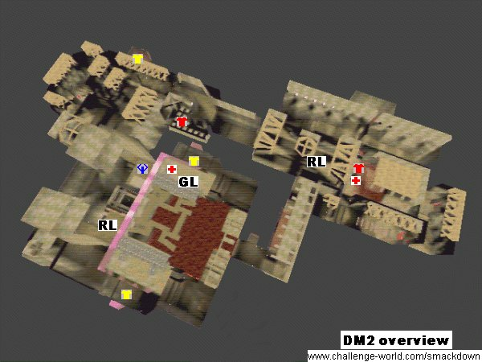
Introduction
DM2 is one of the "big three" teamplay maps for Quakeworld. It is quite different from the other maps because its quite small with its tight corridors and offers a lot more armor than any other map. Also respawns are quite easy to camp here. This often enables good teams to spawnrape their enemies and scores high up in the hundreds. On the other hand, DM2 is also famous for exciting comeback games which are decided by a few frags. The layout with the many switches, platforms, lifts and lava makes it very confusing to people new to the map but with a few tricks the dreaded lava is easily avoided.
Items available
Weapons:
- 2 rocket launchers

- 1 grenade launcher

- 1 super shotgun
- 1 nailgun
Armor:
- 2 red armor

- 3 yellow armor

Powerups:
- 1 Quad

- 2 Megahealths

Important areas
There are 3 important areas in Claustrophobopolis: The Area containing the quaddamage and a rocketlauncher, the nailgun/yellow armor area where both a red armor and a yellow armor are to be found and finally the lower rocketlauncher area. All areas are well interconnected with at least two entrances . There is also a huge room where one can find another two yellow armors and which is often used to launch attacks on the quad area. The floor of that huge room can be removed temporarily by a swich reveiling the lava beneath it but doing so is both dangerous and usually useless.
Lower Rocket launcher and back room
|
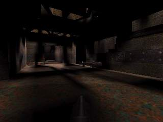
|
The room with the lower Rocket launcher is on the weaker side of the map. People often camp on the ledge just above the Rocket launcher.
There is a passage leading over some moving platforms to the huge hall. Another passage goed to a lift to the entrance oh the hidden Red armor and the gallery leading to the nailgun area. The other two entrances lead to the back room. People in this area are very vulnerable to Quadruns.
The back room contains a Super shotgun, some rockets and most importantly a Red armor and a Megahealth.One can get those either by pressing a switch wich will create a bridge and going through the Rocket launcher room to reach it or by jumping over to the ledge. There is also a teleporter there leading into the hall which is often used for escaping from Quad attacks.
|
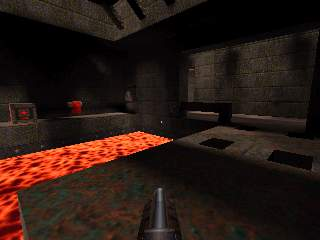
|
Secret red armor:
|
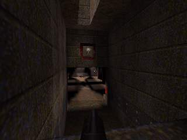
|
This is not really a secret room because its so easy to find. Shooting the switch opposite of the lift will open the entrance for a short time. Jumping down will give you the Red armor.
The exit will open by walking towards it and leads into the shallow water area. This room is very small, good for ambushes or trapppings and infamous selfkills.
|
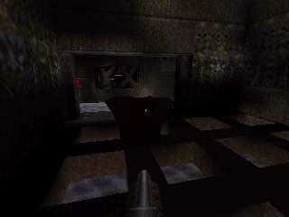
|
Nailgun and water
|
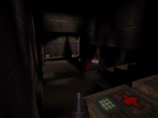
|
This area contains some healthpacks and the Nailgun which is the worst weapon on this map. The healthpacks here are usually needed to recover from fights in the other areas. What makes this area really interesting is that there are 3 respawn points which are very easy to control.
There are connections to the lower Yellow armor, the Quad area and the gallery leading to lower Rocket launcher and secret Red armor entrance. This area is often attacked first.
|
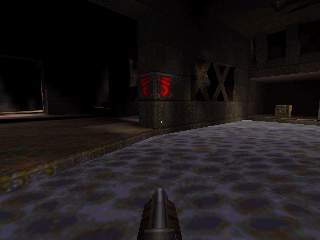
|
Lower yellow armor
|
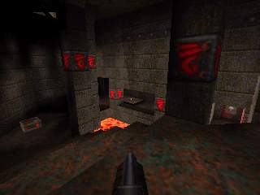
|
Here we have a long stairway leading down to a switch. Behind the bars it opens is a Yellow armor and a teleporter leading to the moving platform to the Grenade launcher as well as the higher Rocket launcher and the Quad.
This teleporter is the main access to the Quad and therefore very important. With a box of rocket and some healthpacks in addition to the Yellow armor, this area is quite easy to defend.
|
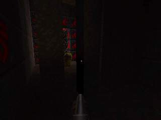
|
Quad area
|
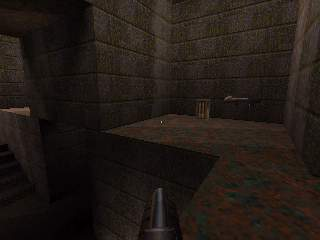
|
The Quad lies high above the rest of the surrounding area. Jumping across the gap into the tunnel will bring you to the second Rocket launcher in the map. Near that one there is a huge and noisy lift leading up to the exit of the Yellow armor teleporter and the moving platfrom to the Greande launcher and a Megahealth. Beside that entrance there are two others, one passage to the large room and the other to the nailgun area which can be partially controlled from here.
|
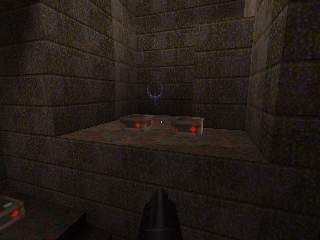
|
Big room
|
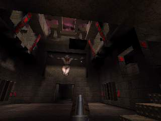
|
The big room interconnects the lower Rocket launcher area and the Quad area. It is a huge symmetric area containing two Yellow armors. These are in some sort of cages which can be accessed by a stairway. Within the cage there are switches which will temporarily remove the floor in the center reveiling the deadly lava beneath. This is not very usefull though because one can get out of the lava while the one in the cage is trapped. The only way out is through a teleport leading into the middle of the room and hence into hot oblivion. Additionally there are switches in the passages to the big room with which players inside the cages can be squished. High in the air there is a platform moving from the Grenade launcher and Megahealth niche to the Yellow armor teleport exit.
|
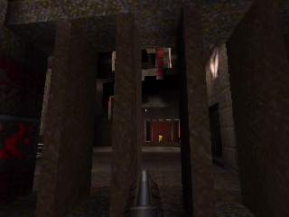
|
Popular shortcuts
There are plenty of shortcuts on this map. Usually they either involve strafe jumping or rocket jumps. One of the most common jumps and probably the first one every quake player learns is the jump over the lava from the low Rocket launcher room to the back room. Getting to the Red armor and Megahealth there also involves a strafe jump over the lava to avoid having to press butons. Another popular jump is the shortcut to the lower Yellow armor throught the columns confining that lava pool. One of the trickier jumps is from the high Rocket launcher to the Quad.
Rocketjumps are usually used to get to the Quad area without using the teleporter at Yellow armor. These are very common, but there it is also possible to rocketjump from the stairs in the big room directly to the Greande launcher or the high entrance to the Quad area.
Another shortcut is the so called "Quad ladder". Standing on the middle step under the Quad enables a teammate to jump on your head and to the Quad from there. This is often seen at the start of the map when players cannot rocketjump yet and sometimes its funny because an enemy accidently uses your help.
Basic strategies
Basically the strategy on DM2 is to control all three important areas Quad, Nailgun/Yellow armor, lower Rocket launcher and then respawn rape. But this sound easier than it is and requires good teamplay, skill and powerup/weapon/armor respawn timing.
Usually one guy would camp the lower Yellow armor thus locking the main entry to the Quad and a upper Rocket launcher. But this position is quite vulnerable for attacks from the secret Red armor so someone should always be around to take this armor and to intercept attacks from the lower Rocket launcher and to help out at Quad if necessary.
The Quadrunner is usually occupied with keeping the Quad area clean from attackers and attacking with Quad himself. The classic Quadrun leads into the lower Rocket launcher room where he would frag as many enemies as possible and then leave through the tele in the back room once Quad runs out.
Last but not least someone tries to camp the low Rocket launcher. His job is to take the Rocket launcher whenever it appears and also to time the Red armor and the Megahealth in the back room. Locking the lower Rocket launcher is a major relieve for teammates on the other side of the map.
Tours
From the lower Rocket launcher to the back room and into the big room
From the big room to the secret Red armor past the Quad
From the lower Yellow armor to the upper Rocket launcher and the Quad
|